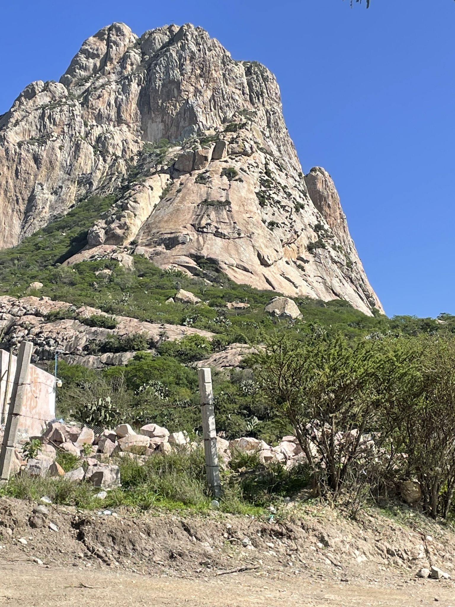

Un viaje de trabajo a México
El relato
Dos viajes al Bajío mexicano por la puesta en marcha de un data center en El Marqués. El primero, de tres semanas en julio, empezó con un domingo en Teotihuacán y dejó los fines de semana para Tequisquiapan, el centro virreinal de Querétaro, los viñedos de Ezequiel Montes y la Peña de Bernal. El segundo, en agosto, sumó un sábado entero en Ciudad de México, de Bellas Artes a Xochimilco, y una noche de lucha libre.
Primera foto
Domingo 30 de junio · 07:39
Ciudad de México, camino a Teotihuacán (viaje 1)
Última foto
Sábado 24 de agosto · 22:06
Cierre del segundo viaje, en Ciudad de México
* En tierra; en el avión, el GPS marcó 5.515 m. ** Distancias en línea recta entre los puntos del GPS: ≈ 590 km en el viaje 1 (CDMX → Teotihuacán → Querétaro y salidas de fin de semana) y ≈ 420 km en el viaje 2 (recorrido por la capital, CDMX ↔ Querétaro); por carretera, unos 1.300 km. No incluyen los traslados diarios a la obra ni los vuelos.
El recorrido
Por tierra desde Ciudad de México hasta Querétaro, con la obra como base y salidas de fin de semana. De vuelta, en avión.
Ciudad de México · Teotihuacán — Estado de México
El Marqués — Querétaro
Tequisquiapan — Querétaro
Bernal · Santiago de Querétaro
El Marqués — Querétaro
Querétaro · Ezequiel Montes · Bernal
Santiago de Querétaro
El Marqués — Querétaro
Querétaro → Ciudad de México
Santiago — Chile
Ciudad de México
Santiago de Querétaro
El Marqués — Querétaro
Ciudad de México
El viaje 2 repitió el tramo Ciudad de México ↔ Querétaro por tierra. Ubicaciones según el GPS de cada foto. Las 5 fotos de la cámara de un colega no tienen GPS ni hora exacta; se ubican el 2 de julio por su marca de agua; otras 2, del viaje 2, se ubican el 23 de agosto por la fecha del archivo.
Primer viaje · 30 de junio — 19 de julio de 2024
Día 01 · domingo 30 de junio
Ciudad de México · Teotihuacán — Estado de México
Llegada a Ciudad de México y, temprano, rumbo a Teotihuacán. Mañana fresca y nublada, de chaqueta. En cuatrimoto por los alrededores, de la Plaza de la Luna a la Ciudadela, y una cueva bajo el valle. Después, a Querétaro.
Clima en las fotos: nublado y fresco · altura 2.250–2.350 m
51 fotografías · 7 lugares
Primera foto del viaje, desde el auto, a las 07:39 del domingo. El palacio de mármol blanco y cúpulas de cerámica se terminó en 1934, tras tres décadas de obra interrumpidas por la Revolución. Ciudad de México está a unos 2.250 m de altura, según el GPS.
Llegada a la zona arqueológica, a unos 42 km en línea recta del centro de la capital. El recorrido por los alrededores se hizo en cuatrimoto.
Junto a la Plaza de la Luna. En los muros quedan pintados jaguares con tocados de plumas y caracoles marinos; el Patio de los Pilares, con sus pilastras talladas de mariposas-quetzal, es uno de los espacios mejor restaurados de la ciudad.
La Pirámide de la Luna cierra por el norte la Calzada de los Muertos, el eje de unos 2 km que ordena toda la ciudad. Al fondo, a la izquierda, se ve la Pirámide del Sol. Altura según el GPS: unos 2.305 m.
En el extremo sur de la calzada. La fachada alterna cabezas de la Serpiente Emplumada con tocados del dios de la lluvia o de la guerra, según la interpretación. Teotihuacán, que tuvo su apogeo entre los siglos III y VI, es Patrimonio de la Humanidad desde 1987.
Parada del paseo en cuatrimoto en una de las cuevas de la zona, de origen volcánico, donde los teotihuacanos extraían piedra para construir. Estas fotos no tienen GPS.
Foto con el guía de la cuatrimoto. Desde aquí, según las fotos del día siguiente, el viaje siguió por tierra unos 170 km en línea recta hasta Querétaro.
Días 02–06 · 1 al 5 de julio
El Marqués — Querétaro
La primera semana en el data center: tableros de control, controladores Metasys, salas de equipos y el exterior de la obra. El martes, cena en la ciudad.
Clima en las fotos: sol con nubes, tormentas de tarde · altura ≈ 1.913 m
36 fotografías · 7 lugares
Data center en construcción en El Marqués, al oriente de Querétaro y a unos 4 km del aeropuerto. Altura según el GPS: unos 1.913 m. Las fotos de la obra se repiten casi todos los días hábiles hasta el 17 de julio.
Tableros de control con medidores de energía, unidades de aire y salas eléctricas. Cinco fotos son de la cámara de un colega (con marca de agua del 2 de julio) y no traen hora exacta ni GPS.
Medidores en los tableros de la sala.
Por la tarde, a unos 21 km de la obra, en el oriente de la ciudad.
Controladores Metasys (Johnson Controls) en los tableros del sistema de gestión del edificio, salas de equipos y pasillos de servidores todavía vacíos.
Pruebas con el notebook conectado a los controladores, borneras y recorrido por pasillos y oficinas del edificio.
Día 07 · sábado 6 de julio
Tequisquiapan — Querétaro
Un sábado de sol en un Pueblo Mágico de portales y casas de colores.
Clima en las fotos: soleado y cálido · altura ≈ 1.880 m
8 fotografías · 1 lugar
Día 08 · domingo 7 de julio
Bernal · Santiago de Querétaro
En la mañana, la subida a la Peña de Bernal. Al mediodía, el centro de Querétaro: el Templo de la Cruz, San Francisco, la Congregación y, al final de la tarde, el mirador del acueducto.
Clima en las fotos: cielo azul, sol fuerte · altura 1.830–2.304 m
44 fotografías · 5 lugares
Uno de los monolitos más altos del mundo: unos 350 m sobre el pueblo, según la mayoría de las fuentes. Se formó hace unos 8,7 millones de años con lava que se enfrió dentro de un volcán. El sendero llega hasta un mirador; el GPS marcó 2.304 m, el punto más alto del viaje en tierra.
En el cerro del Sangremal, donde según la tradición se fundó la ciudad en 1531. La Plaza de los Fundadores y almuerzo bajo los árboles, con el equipo de trabajo.
Por la calle peatonal hacia el Jardín Zenea y el templo de San Francisco, de fachada rojiza, con la escultura del danzante frente al atrio. El centro histórico de Querétaro es Patrimonio de la Humanidad desde 1996.
Las dos torres de la Congregación de Guadalupe, jardines con laureles de la India podados en bloque y callejones con bugambilias.
Días 09–13 · 8 al 12 de julio
El Marqués — Querétaro
Medidores, válvulas y equipos de enfriamiento. No hay fotos del martes 9.
Clima en las fotos: nubes, tormenta el viernes 12
19 fotografías · 1 lugar
Día 14 · sábado 13 de julio
Querétaro · Ezequiel Montes · Bernal
Mañana en el centro de Querétaro, tarde de espumosos en Freixenet y atardecer en Bernal, con la Peña encima del pueblo. El día con más fotos del viaje.
Clima en las fotos: sol y nubes altas · altura 1.830–2.065 m
73 fotografías · 5 lugares
Por dentro, la nave y la cúpula del templo.
Portales, la Casa de la Corregidora (hoy Palacio de Gobierno), donde Josefa Ortiz de Domínguez avisó en 1810 que la conspiración había sido descubierta, y la fuente dedicada al marqués que hizo el acueducto.
Un mapa en relieve del centro histórico y autos antiguos frente al Jardín Zenea.
En Ezequiel Montes, a unos 54 km en línea recta del centro de Querétaro. La bodega española llegó en 1979 y en 1984 sacó su primer espumoso hecho en México. Cava subterránea, barricas, viñedos, olivos, caballos y la botella gigante de la entrada.
A 8 km de la finca. Calles empedradas, la Peña detrás de todo, licores y artesanías, el templo de San Sebastián con papel picado y danzas en la calle. Y las letras de BERNAL.
32 segundos en las calles de Bernal, con la Peña al fondo. El GPS del video marcó 2.058 m.
Día 15 · domingo 14 de julio
Santiago de Querétaro
Un paseo tranquilo por la Alameda Hidalgo.
Clima en las fotos: sol entre árboles · altura ≈ 1.825 m
4 fotografías · 1 lugar
Días 16–18 · 15 al 17 de julio
El Marqués — Querétaro
Los últimos detalles antes del regreso.
Altura ≈ 1.914 m
5 fotografías · 1 lugar
Día 20 · viernes 19 de julio
Querétaro → Ciudad de México
Vuelo de Querétaro a Ciudad de México al anochecer, y llegada al aeropuerto internacional.
Clima en las fotos: nublado al despegar · 5.515 m en vuelo
5 fotografías · 3 lugares
El avión en la losa del aeropuerto, a unos 4 km de la obra.
A las 19:36 el GPS marcó 5.515 m sobre el nivel del mar. A las 19:48 y 19:50, la ciudad iluminada durante el descenso.
Ya en tierra, a las 21:32.
Segundo viaje · 16 — 24 de agosto de 2024
Un mes después, otra semana de trabajo en la obra, con un sábado completo en Ciudad de México a la llegada y una noche de lucha libre antes de volver.
Día 01 · viernes 16 de agosto
Santiago — Chile
Un mes después del primer viaje, de nuevo rumbo a Ciudad de México.
El vuelo no aparece en las fotos · ≈ 6.600 km
1 fotografías · 1 lugar
Viernes en la noche, a las 20:34 hora de Chile, según el reloj del teléfono. La foto no tiene GPS.
Día 02 · sábado 17 de agosto
Ciudad de México
Un sábado completo en la capital: el centro histórico de punta a punta, Reforma después de almorzar, el Estadio Azteca y, al atardecer, las trajineras de Xochimilco. Unos 27 km en línea recta entre las fotos.
Clima en las fotos: sol en la mañana, nublado en la tarde · altura ≈ 2.230–2.270 m
47 fotografías · 8 lugares
La Plaza de la Constitución a primera hora. El edificio del Ayuntamiento, la Catedral Metropolitana y una pirámide en plena plaza: en julio de 2024 se levantó ahí una réplica de 15 m del Castillo de Kukulcán de Chichén Itzá para un espectáculo de luz y sonido dedicado al pueblo maya.
Por la calle Madero, la fachada de azulejos de Talavera, y el Palacio de Bellas Artes, terminado en 1934, que ya aparecía en la primera foto del viaje de julio.
Junto a la Torre Latinoamericana, la portada churrigueresca de la capilla de Balvanera y, adentro, el retablo dorado. Fue uno de los primeros conventos franciscanos de América.
19 segundos dentro del templo, frente al retablo mayor.
El templo de Santo Domingo, los portales de los Evangelistas, donde todavía trabajan escribanos, y el antiguo edificio de la Aduana.
La bandera y la Catedral, con la réplica de la pirámide al frente.
La Fuente de la Diana Cazadora y el Ángel de la Independencia, inaugurado en 1910 para el centenario. Tarde nublada, unos 2.250 m de altura.
Al sur de la ciudad, a unos 14 km del centro. Inaugurado en 1966, fue sede de las finales de los Mundiales de 1970 y 1986, y se preparaba para el de 2026.
Trajineras de colores en el embarcadero, en los canales que quedan del antiguo sistema de chinampas. Patrimonio de la Humanidad junto al centro histórico desde 1987.
Día 03 · domingo 18 de agosto
Santiago de Querétaro
Unos 184 km en línea recta desde Ciudad de México. Llegada de noche al centro, con baile en el Jardín Zenea y alebrijes de luz.
Clima en las fotos: noche despejada · altura ≈ 1.815–1.855 m
5 fotografías · 3 lugares
Baile en el kiosco del Jardín Zenea, frente a San Francisco, en el mismo centro que se recorrió en julio.
Días 04–08 · 19 al 23 de agosto
El Marqués — Querétaro
Una semana más en el data center.
Altura ≈ 1.915 m
3 fotografías · 1 lugar
Día 09 · sábado 24 de agosto
Ciudad de México
Unos 167 km en línea recta de vuelta a la capital. Noche de lucha libre en la Arena Coliseo y paseo por el Zócalo iluminado. Después, el regreso a Santiago, que no aparece en las fotos.
Clima en las fotos: noche sin lluvia · altura ≈ 2.230–2.250 m
5 fotografías · 2 lugares
De vuelta en Ciudad de México. La Arena Coliseo, en la calle República de Perú 77, abrió el 2 de abril de 1943 y le dicen «el Embudo» por su forma. Fue la sede principal del CMLL hasta que se construyó la Arena México.
Al cierre
Dos viajes, una obra y un monolito: Querétaro entre semana, la Sierra Gorda los domingos y la capital de ida y de vuelta.
Fotos tomadas con un iPhone 12, más 7 de un colega. Cada foto se puede descargar en 2048 px.